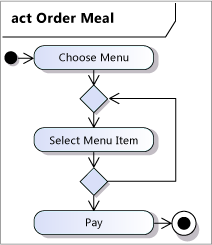
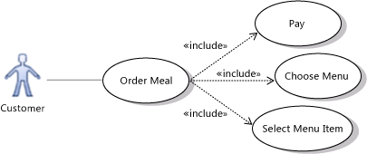
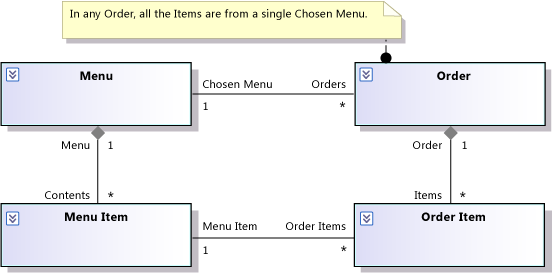

Requirements describe what the stakeholders expect from the product. You should express your requirements in terms that allow them to be easily discussed with the business stakeholders, using the vocabulary and concepts of the business domain. Requirements should neither discuss nor depend on the implementation. Requirements include not only the behavioral and quality of service expectations of the users but also statutory constraints and commercial standards.
By recording requirements in Visual Studio Team Foundation Server by using the requirements work item, you gain the following benefits:
-
Monitor progress toward implementing the requirements by linking them to use cases and associated task and test case work items.
-
Structure the requirements into overall and more detailed use cases so that you can manage them more easily and so that progress reports can summarize the information.
-
Model the requirements in Visual Studio Ultimate, linking model elements to requirements in Team Foundation Server.
The activities that are described in this topic, like any development activities, should not be performed in strict order. Develop a domain model while you are writing scenarios because one activity will help you improve the other activity. Develop the use cases as the time for coding them approaches. Feed the experience with code that has been written and demonstrated back to the scenarios that have yet to be implemented.
In this topic
 When
to Develop Requirements
When
to Develop Requirements
Team Foundation Server supports iterative working, and this practice is most effective when the early iterations are used to gain feedback from prospective users and other stakeholders. This feedback can be used to improve the requirements that have been stated for future iterations. This results in a product that is much more effective in its ultimate installation than a product that is developed over the same period without any user trial. If your project is one component among many in a larger program, early integration with other components allows the program architects to improve the overall product.
This flexibility must be balanced against the need to give firm commitments to your customer or to partners in parallel projects.
To a controlled extent, therefore, requirements are developed and refined throughout the project. Because the detailed use cases are likely to change during the project, determining them in full before the appropriate implementation is likely to result in wasted effort.
-
In Iteration 0, develop a set of requirements that describe of the main features, with just enough detail to form a project plan. The prodect plan assigns requirements to use cases and use cases toiterations and states what requirement will be fulfilled at the end of each iteration. Create a domain model of the major concepts and activities, and define the vocabulary that will be used for those concepts both in discussion with the users and in the implementation. Determine broad requirements that pervade every feature, such as security and other quality of service requirements.
-
At or near the start of each iteration, develop the use cases for those requirements in more detail. Determine the steps that the users will follow, defining them with the help of activity or sequence diagrams. Define what happens in exceptional cases.
-
Verify as often as possible all the requirements that have been implemented. Pervasive requirements, such as security, must be verified with tests that are extended for each new feature. If possible, automate the tests because automatic tests can be performed continuously.
Managing requirements changes
The following guidelines let you operate an incremental process while monitoring it to satisfy requirements.
-
Do not change the use cases of requirements that are set for an iteration. In the rare case of an abrupt change in circumstances, you might have to cancel an iteration, review the project plan, and start a new iteration.
-
Look for uncertainties in the requirements. Try to arrange the plan so that user experience with early iterations yields information that reduces the uncertainties.
-
Use change request work items to record requests to change behavior that has already been implemented, unless the requested improvement is already part of the plan. Link each change request to the appropriate requirement work items. For more information, see Change Request (GovDev) .
-
Review change requests when you review the product before each iteration. Examine the impact of the request on dependent projects and users, and estimate the cost with regard to changes in your code. If a change request is accepted, update the requirement.
-
Update the tests to conform to every requirements change.
-
Designate a cut-off date (for example, after iteration 2 or 3) after which requirements changes must be much more strongly justified. If your project is for a paying customer, this is the date to have the customer approve a baseline set of requirements and switch from hourly payment to fixed price.
-
Use bug work items to record implemented behavior that does not perform according to the explicit or implicit use cases of requirements. Where practical, create a new test that would have caught the bug.
Model the business domain
Create a UML model that describes the principal activities and concepts that are involved in the use of your product. Use the terms that are defined in this model as a "ubiquitous language," in the scenarios, in discussions with the stakeholders, in the user interface and any user manuals, and in the code itself.
Many requirements are not explicitly stated by your customer, and comprehending the implied requirements depends on an understanding of the business domain, that is, the context in which the product will work. Some of the work of requirements gathering in an unfamiliar domain is, therefore, about gaining knowledge of that context. After this kind of knowledge has been established, it can be used on more than one project.
Save the model in version control.
For more information, see Modeling User Requirements.
Modeling Behaviors
Draw activity diagrams to summarize scenarios. Use swimlanes to group the actions that are performed by different actors. For more information, see UML Activity Diagrams: Guidelines.
Although a scenario usually describes a specific sequence of events, an activity diagram shows all the possibilities. Drawing an activity diagram can prompt you to think about alternative sequences and to ask your business clients what should happen in those cases.
The following illustration shows a simple example of an activity diagram.
Where the interchange of messages is important, it might be more effective to use a sequence diagram that includes a lifeline for each actor and major product component.
Use case diagrams let you summarize the different flows of activity that your product supports. Each node on the diagram represents a series of interactions between the users and the application in pursuit of a particular user goal. You can also factor common sequences and optional extensions into separate use case nodes. For more information, see UML Use Case Diagrams: Guidelines.
The following illustration shows a simple example of a use case diagram.
Use cases play a very important role in the GovDev for TFS 2010 v1.0 process template. They act as the link bewteen the top-down requirements and the iterative implementation of application functionality and testing. For more information see Write Use Cases and Use Case (GovDev).
Modeling Concepts
Draw domain class diagrams to describe the important entities and their relationships that are mentioned in the scenarios. For example, the DinnerNow model shows Restaurant, Menu, Order, Menu Item, and so on. For more information, see UML Class Diagrams: Guidelines.
Label the roles (ends) of the relationships with names and cardinalities.
In a domain class diagram, you do not typically attach operations to the classes. In the domain model, the activity diagrams describe the behavior. Assigning responsibilities to program classes is part of the development work.
The following illustration shows a simple example of a class diagram.
Static constraints
Add to the class diagrams constraints that govern the attributes and relationships. For example, the items on an order must all come from the same restaurant. These types of rules are important for the design of the product.
Model consistency
Ensure that the model and scenarios are consistent. One of the most powerful uses for a model is to resolve ambiguities.
-
The scenario descriptions use the terms that are defined in the model and are consistent with the relations that it defines. If the model defines menu items, the scenarios should not refer to the same thing as products. If the class diagram shows that a menu item belongs to exactly one menu, the scenarios should not talk of sharing an item between menus.
-
Every scenario describes a series of steps that are allowed by the activity diagrams.
-
Scenarios or activities describe how each class and relationship in the class diagram is created and destroyed. For example, what scenario creates a menu item? When is an order destroyed?
Develop Quality of Service Requirements
Create work items that specify quality of service requirements. Set the Requirement Type field to Quality of Service, Non-Functional. Performance Safety or Security.
Consider each of these categories for each top level requirement and derive use case if applicable.
The title of each quality of service requirement should capture its definition by presenting a context, an action, and a measurement. For example, you might create the following requirement: "During a catalog search, return the search results in less than three seconds.”
In addition, it is useful to capture more detail that explains why the requirement is necessary. Describe why the persona would value the requirement and why this level of service is required. Provide context and justification. This explanation may include useful risk management information such as data from a market survey, a customer focus group, or a usability study; help desk reports/tickets; or other anecdotal evidence.
Review Requirements
When the requirements have been written or updated, they should be reviewed by the appropriate stakeholders to ensure that they adequately describe all user interactions with the product. Common stakeholders might include a subject matter expert, a business analyst, and a user experience architect. The scenarios are also reviewed to ensure that they can be implemented in the project without any confusion or problems. If any problems are spotted, the scenarios must be fixed so that they are valid at the conclusion of this activity.
Review each requirement for the following characteristics:
-
The requirement is written in the context of what task users must perform, what they already know, and how they expect to interact with the product.
-
The requirement outlines a problem and is not obscured by proposed solutions to the problem.
-
All relevant user interactions with the product are identified.
-
The subject matter expert, the business analyst, and the user experience architect review each requirement in the context of the project to validate that all requirements can be implemented successfully. If a requirement is not valid, it is revised so that it is valid.
-
The requirement can be implemented with the available techniques, tools, and resources and within budget and schedule.
-
The requirement has a single interpretation that is easily understood.
-
The requirement does not conflict with another requirement.
-
The requirement is testable.
Validation
Plan to deploy beta versions of the product into its working environment before its final release. Plan to update the requirements, based on stakeholder feedback from that deployment.
Validation means ensuring that the product fulfills its intended use in its operating environment. In GovDev for TFS 2010, validation is achieved by demonstrating working software to the stakeholders at the end of every iteration throughout the project. The schedule is arranged in such a way that concerns that are fed back to the developers from early demonstrations can be dealt with in the plan for the remaining iterations.
To achieve true validation, the product must not only be run in a demonstration or simulated context. As far is as practicable, it should be tested in real conditions.
Write
Use Cases
Work with your customer and other stakeholders to create scenarios, and enter them as use case work items linked to the requirement.
A use case is a narrative that describes a sequence of events, shows how a particular goal is achieved, and usually involves interaction between people or organizations and computers.
Give it a descriptive title that clearly distinguishes it from others when viewed in a list. Make sure that the principal actor or actors are stated and that their goal is clear. You can write a use case by filling out the elements of the use case form. For more information see Use Case (GovDev).
Specific Scenarios
Start by writing specific scenarios, which follow a particular set of actors through a specific sequence. For example, "Carlos orders a pizza and garlic bread at the DinnerNow Web site. The Web site redirects Carlos to Woodgrove Bank's payment service. Fourth Coffee prepares the pizza and delivers it."
Specific scenarios help you envisage the system in use and are most useful when you first explore a feature.
It can also be useful to create named personas that describe the backgrounds and other activities of people and organizations. Carlos sleeps rough and uses an Internet café; Wendy lives in a gated community; Sanjay orders meals for his wife at her work; Contoso runs a chain of 2,000 restaurants worldwide; Fourth Coffee is run by a couple who deliver by bicycle.
More generic scenarios that are written in terms of "a customer," "a menu item," and so on can be more convenient but are less likely to lead to the discovery of useful features.
Levels of detail
In Iteration 0, write a few important scenarios in some detail, but write most scenarios in outline. When an iteration approaches in which a particular scenario is to be fully or partly implemented, add more detail.
When you first consider a scenario, it can be useful to describe the business context, even aspects in which the product takes no part. For example, describe the DinnerNow method of delivery: Does each restaurant organize its own deliveries, or does DinnerNow run a delivery service? The answers to such questions provide useful context for the development team.
The more detailed scenarios that you develop at the start of an iteration can describe user interface interactions, and storyboards can show user interface layout.
Organizing the scenarios
You can organize scenarios by using the following methods:
-
Draw use case diagrams that show each scenario as a use case. This method is recommended because it makes the scenarios very easy to present and discuss. For more information, see UML Use Case Diagrams: Guidelines.
-
Link each use case to the work item that defines the scenario. For more information, see How to: Link from Model Elements to Work Items.
-
Draw Extends relationships to show that one scenario is a variation of another. For example, "Customer specifies separate payment and delivery addresses" is an extension of the basic "Customer makes an order" use case. Extensions are particularly useful to separate out scenarios that will be implemented in a later iteration.
-
Draw Includes relationships to separate a procedure such as "Customer logs on," which is common to several use cases.
-
Draw generalization relationships between general scenarios such as "Customer pays" and specific variants such as "Customer pays by card."
-
Additional Resources
For more information, see the following Web resources:
-
A Practical Guide to Feature Driven Development, Stephen R. Palmer and Malcolm J. Felsing; Prentice-Hall PTR, 2002.
-
Streamlined Object Modeling: Patterns, Rules and Implementation, Jill Nicola, Mark Mayfield, and Mike Abney; Prentice Hall PTR, 2001.
-
Agile Modeling: Effective Practices for Extreme Programming and the Unified Process, Scott Ambler; Wiley, 2002.
-
Domain Driven Design: Tackling Complexity in the Heart of Software, Eric Evans; Addison Wesley Professional, 2003.
-
Object Design: Roles, Responsibilities and Collaborations, Rebecca Wirfs-Brock and Alan McKean; Addison Wesley Professional, 2002.